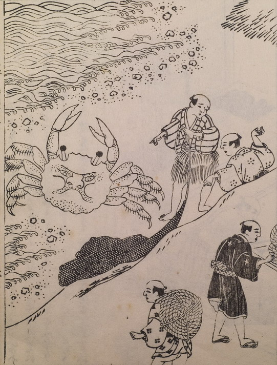

平家蟹；ヘイケガニ

甲羅に人の顔がある巨大な蟹。波打ち際にいる。
著作者：平瀬徹斉／出典：親書誌：U426_nichibunken_0237：日本山海名物図絵；ニホンサンカイメイブツズエ／日付：2010／資源識別子：U426_nichibunken_0237_0001_0000
Copyright (c)2010- International Research Center for Japanese Studies, Kyoto, Japan. All rights reserved.